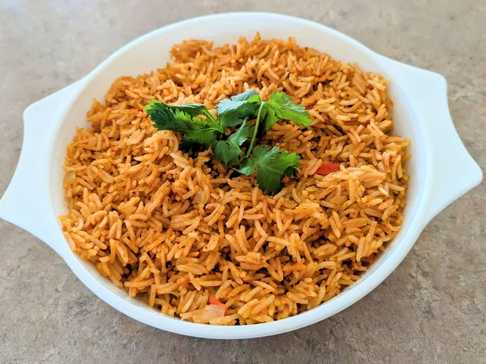

Spanish Rice

Description
This is the recipe on how to make spanish rice.
Ingredients
- 2 tablespoons oil
- 2 tablespoons chopped onions
- 1 1/2 cups uncooked white rice
- 2 cups chicken broth
- 1 cup picante sauce
Steps
- Heat oil in a large, heavy skillet over medium heat. Add
onion; cook and stir until tender, about 5 minutes.
- Add rice; cook and stir until rice begins to turn golden
brown. Stir in chicken broth and picante sauce. Reduce heat,
cover, and simmer until liquid has been absorbed, about 15
to 20 minutes.